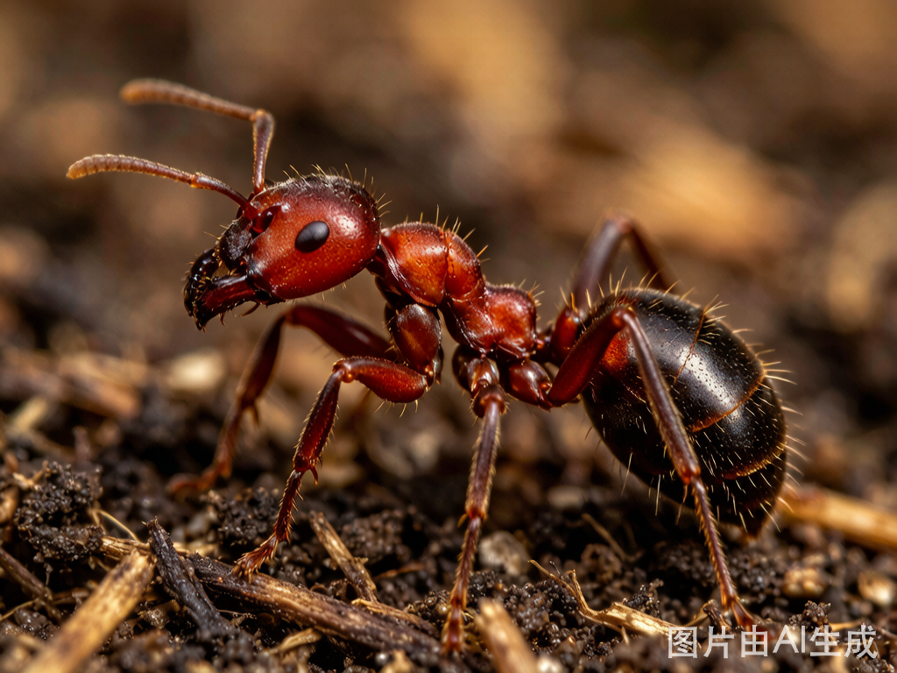

THE INVASIVE CHRONICLE
它们没有护照，没有签证，却正在重写中国的生态版图
我们脚下的草坪、路边的野花、河道里的水草——
这些看似"理所当然"的本土风景，可能来自万里之外。
红火蚁从南美到广东，只用了90年。
水葫芦从观赏植物到河道噩梦，只用了30年。
它们没有国界，没有签证，却以每年数百公里的速度，
重写中国生态版图。
660余种外来物种已入侵中国34个省级行政区。
年均经济损失超过282亿美元（约合人民币2000亿元）。
这场无声的迁徙，正在我们眼前发生。
从南到北、从沿海到内陆 — 660余种外来入侵物种在中国的分布版图
从2006年26个保护区调查的131种，增长至2019年的660种——增幅达403%
基于406种外来入侵植物在2684个县级行政区的物种丰富度。 与上方全国地图（含动植物）互为补充：此处为纯植物界数据，精度下沉至县级。
每个气泡代表一个物种。横轴为入侵级别（1级最严重），纵轴为分布省份数量。 气泡颜色代表所属科，大小代表该科物种数（菊科17种最大，苋科7种、禾本科4种次之）。 悬停可查看物种名和具体数据。
从原产地到中国，从1省到13省 — 一场跨越数十年的隐秘征程
外来物种通常经由单一"桥头堡"登陆中国（多为沿海口岸或边境地带）， 继而向周边省份跳跃式扩散。红火蚁2003年首次在台湾被发现，2004年进入广东， 此后以每年约1-2个新省份的速度向北、向西扩张。拖动时间轴可逐省追踪其"行军路线"—— 从最初的1省到如今的13省，二十年间地理版图扩大逾12倍。

红火蚁 Solenopsis invicta — 来自南美洲的入侵先锋基于341种入侵物种的原产地大洲统计，弧线粗细代表物种数量
美洲是全球入侵物种的"最大输出中心"。北美的豚草、南美的红火蚁与福寿螺， 借助国际贸易航道跨越太平洋，在中国找到"第二故乡"。 值得注意的是，物种输出量并不与国家贸易量完全正相关—— 气候相似性、物种自身扩散能力、检疫标准的差异，同样决定着"谁先到、到多少"。
左侧为原产地大洲，中间为物种科，右侧为入侵级别（1级最严重）
连国家级自然保护区——我们为生态留的最后自留地——也没能幸免
400种外来入侵植物首次记录年份 · 从1571年（明隆庆五年）到2018年
341种入侵物种档案 — 认识这些改写中国生态版图的外来者
从扩散广度、危害等级、生态威胁、防治难度、监管紧迫度 5 个维度对比入侵物种
▼ 点击下方物种名添加到雷达图中 ▼
从iflora全量名录8522条记录到341种已评级物种，层层筛选揭示入侵物种的"金字塔"结构。
顶部37种恶性入侵物种，占已评级物种的10.9%，却是生态安全的最严重威胁。
加权计算：恶性入侵(1级)权重6，严重(2级)权重5，…，有待观察(5级)权重2。
排名揭示哪些科在中国具有最高入侵威胁。
34个省级行政区的入侵物种按级别分布。云南以321种居首，其中31种为恶性入侵。
颜色越深，该级别物种越多。点击可查看详情。
科与省份之间的物种流动网络。左侧为入侵物种的主要科，右侧为受影响的省份。
弧线粗细表示该科的物种在该省份的分布数量。
代价：从百亿到2363.5亿美元 — 经济损失、海关前线与异宠贸易的真实账单
以上数据的巨大差异恰恰说明："经济损失"从来不是一个单一数字。 统计口径不同（物种范围、是否计入间接损失、是否为累计还是年均），结论可差数十倍。 下方冰山图以视觉方式呈现：浮出水面的只是统计到的直接损失，水下还藏着难以量化的生态代价—— 比如本地物种灭绝导致的食物链断裂、生态系统服务功能的永久丧失。
走私者如何将活体外来物种偷运入境？点击左侧卡片，揭穿他们的伪装伎俩 →
以下数据来自海关总署公布的2025年口岸截获案例。需要明确：这些案例中92.6%属于"异宠走私"， 而非已定殖的入侵物种。"异宠"一旦逃逸或被弃养，才可能成为下一条入侵链的起点。
东南亚和南美洲是主要来源地；昆虫和爬行动物是走私最多的门类；旅检和邮递是主要入境通道。 这条"异宠供应链"揭示了一个全球化的地下贸易网络。
以下8个案例精选自393宗截获档案，涵盖不同物种、来源和走私手法。← 左右滑动查看 →
上图展示了海关截获案例的地理分布。 深圳、广州、上海、北京等一线口岸是查获的"主力"—— 但这不意味着内陆口岸就没有风险。随着跨境电商和邮递渠道的兴起， 包裹夹带正成为外来物种入境的新通道。
异宠贸易已成为外来物种入侵的主要"扩散引擎"之一。 中国养殖异宠规模已超1700万，其中近八成来自境外。 从巴西龟到鳄雀鳝，从绿鬣蜥到巨人蜈蚣——这些"宠物"一旦被弃养或逃逸， 便可能在本土生态中引发连锁灾难。下方图表展示了主要异宠品类占比与监管风险。
从"行李夹带"到"人身绑藏"，12种惯用伎俩全揭露。
点击卡片查看具体案例，看看走私者如何瞒天过海。
50个口岸、393宗案例实时透视。珠三角是异宠走私的"超级枢纽"，但内陆口岸风险正在上升。
截获一票可疑货物需要经历哪些关卡？从口岸初筛到实验室DNA鉴定，六道防线筑起国门生物安全屏障。
从被动拦截到主动出击 — 中国的生物安全应对之路
从境外预警到生态修复，6环防线构成全链条防控体系
中国的外来物种管理政策经历了从"零散应对"到"全面法治"的演进。 下方时间轴跨越四十年，分为学科奠基、体系构建、全面法治三个阶段， 记录了中国从1986年零星摸索到2026年六部门联合管控的完整历程。
从零星探索到系统学科，中国入侵生物学走了十六年
无论在哪里发现疑似外来入侵物种，记住：不接触、不扩散、快记录、找部门